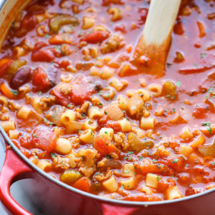

Pasta e Fagioli

Description
Yes, this is the complete copycat of Olive Garden’s heartwarming Pasta e Fagioli, which is a pasta and bean soup. And it’s seriously so easy to make right at home! All that takes some effort is the prep work for the veggies. That’s it! Best of all, this recipe is enough to feed an army! Just be sure to add the pasta to serve or else it’ll soak up all the liquid over time.
Ingredients
- 1 cup ditalini pasta
- 2 tablespoons olive oil, divided
- 1 pound spicy Italian sausage, casing removed
- 3 cloves garlic, minced
- 1 onion, diced
- 3 carrots, peeled and diced
- 2 stalks celery, diced
- 3 cups chicken broth
- 1 (16-ounce) can tomato sauce
- 1 (15-ounce) can diced tomatoes
- 1 teaspoon dried basil
- 1 teaspoon dried oregano
- 3/4 teaspoon dried thyme
- Kosher salt and freshly ground black pepper, to taste
- 1 (15-ounce) can red kidney beans, drained and rinsed
- 1 (15-ounce) can of Great Northern beans, drained and rinsed
Directions
-
In a large pot of boiling salted water, cook pasta according to package instructions; save 1 cup of pasta water, drain pasta and set aside.
-
Heat 1 tablespoon of olive oil in a large stockpot or Dutch oven over medium heat. Add italian sausage to the skillet and cook until browned, about 3-5 minutes, making sure to crumble the sausage as it cooks; drain excess fat and set aside.
-
Add remaining 1 tablesppon oil to the stockpot. Stir in onion, carrots and celery. Cook stirring occasionally for 1-2 minutes. Add in garlic and cook until tender about 3 additional minutes.
-
Whisk in chicken broth,tomato sauce, diced tomatoes, baskl, oregano, thyme, Italian sausage and 1 cup of pasta water; season with salt and pepper to tast. Bring to a boil; reduce heat and simmer, covered, until vegetables are tender, about 10-15 minutes.
-
Stir in pasta and beans until heated through.
- Serve immediately